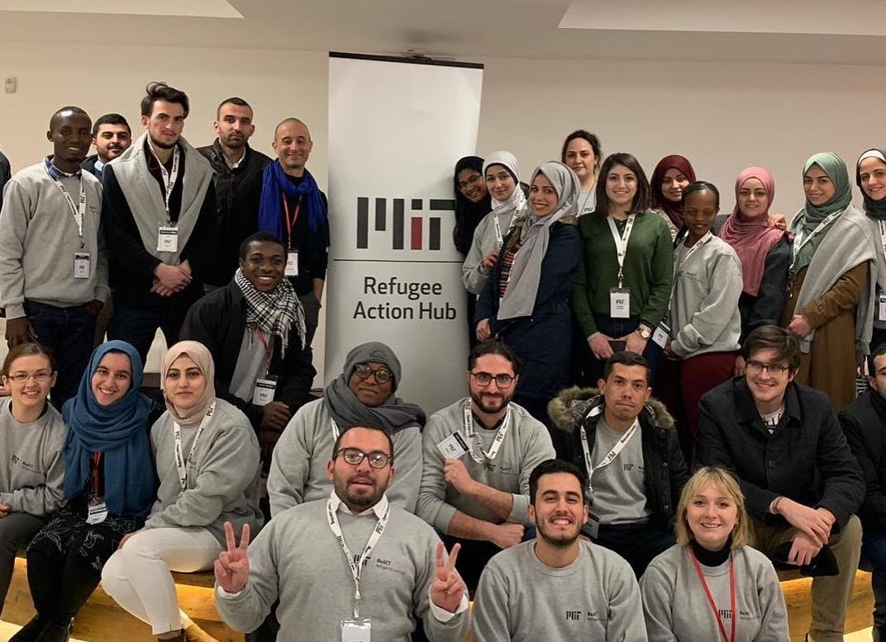

|
Hello! I am a Masters Student at the MIT Laboratory for Information & Decision Systems advised by Professor Jonathan P. How and am concentrating in AI. I am interested in reinforcement learning, deep learning, and robotics, and enjoy working on problems at the intersection of artificial intelligence and human decision-making. I recently finished my computer science undergraduate studies at MIT, where I worked with Professor Jonathan P. How (AeroAstro) and Professor Luca Carlone (AeroAstro). During my undergrad, I interned at Amazon Robotics with Anatoly Mitlin and Uber ATG with Carlos Vallespi, and IBM with Annamaria Balazs. In my spare-time, I enjoy having discussions on morality, spirituality, and religion as part of MIT's Interfaith Community, Addir. I am also committed to improving the condition of underprivileged women and children as part of Helping Hand Relief & Development and Indian Muslim Relief & Charities. I hope to combine technology with my passion to help the developing world and beyond. Feel free to reach out and have a conversation! |

|
News
- November 2020: New Talk! - I will be giving a TEDxMIT Talk - Bridging the Distance - in a month on the importance of interfaith dialouge and its connection to my research. Check it out on December 20th here!
- September 2020: I began my Masters at MIT!
Research

|
Marwa Abdulhai Dongki Kim, Matthew Riemer, Miao Liu, Gerald Tesauro, Jonathan P. How arxiv Version; to be submitted to conferences Paper / Code We modify the option critic approach, a hierarchical reinforcement learning method, to help an artificial agent learn generalizable skills and preserve past knowledge in continual learning settings. |

|
Dongki Kim, Miao Liu, Matthew Riemer, Chuangchuang Sun, Marwa Abdulhai Golnaz Habibi, Sebastian Lopez-Cot, Gerald Tesauro, Jonathan P. How Under Review as Conference Paper, AAAI-20 Symposium Paper / Code We develop a novel meta-multiagent policy gradient theorem that directly accommodates for the non-stationary policy dynamics inherent to multiagent settings. Our meta-agent directly considers both an agent’s own non-stationary policy dynamics and the non-stationary policy dynamics of other agents to adapt fast. |

|
Marwa Abdulhai, Austin Floyd, Sean Patrick Kelley, David Klee, Luxas Novak, Rose E. Wang Robotics: Science and Systems I, 2017. Video | Project Page My team and I developed a fast, autonomous, ~maze-solving~ racecar, working on projects in controls, computer vision, path planning, and mapping throughout the semester. |
Teaching
|
Spring 2019 Assignments / Medium Article |
|  |
January 2019 Program Page / |

|
December 2018 Course Page / |